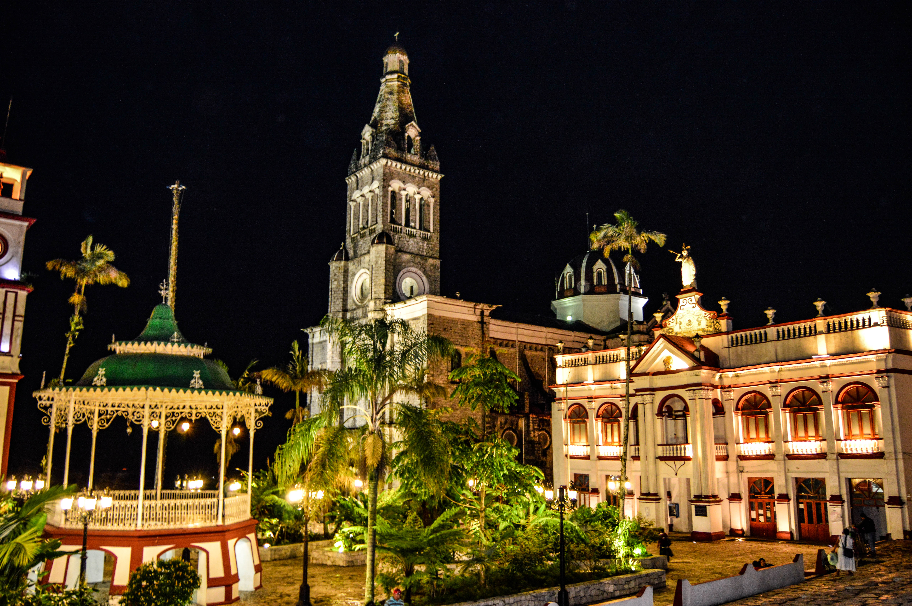
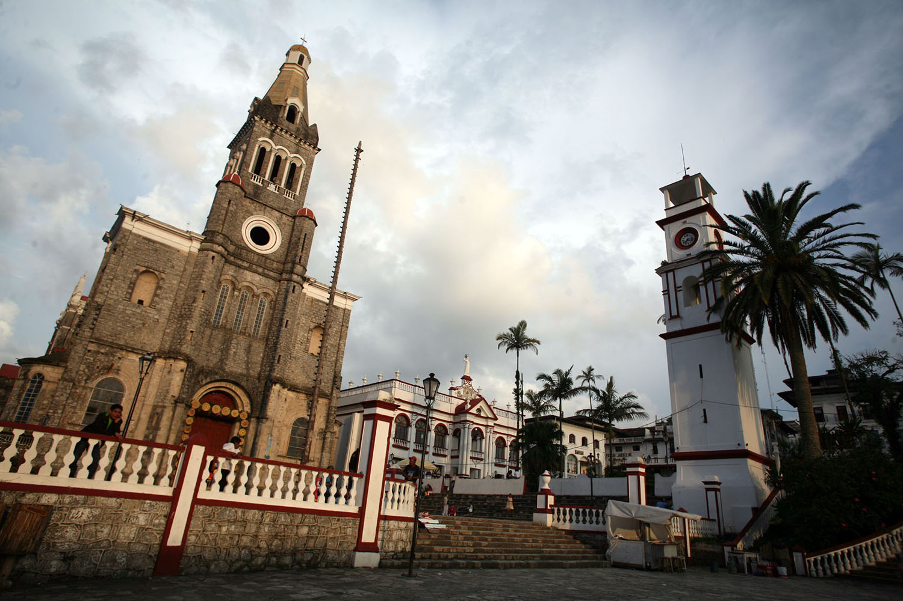
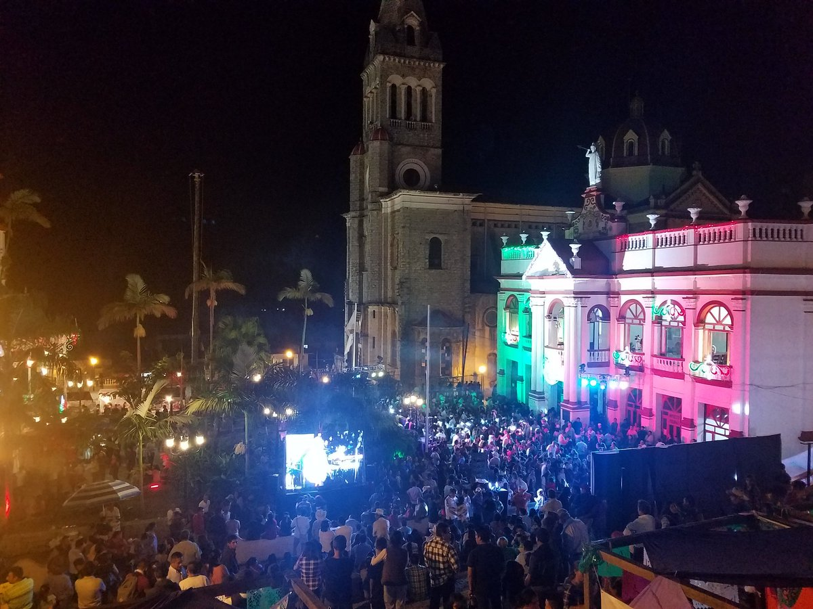

Cuetzalan

- 
- 
- 
Ubicación
Significado
El nombre de la población está formado por las raíces náhuatl "quetzalli": Cosa brillante, hermosa; "lan": junto, cerca, que significa: "Junto a las aves preciosas llamadas quetzal". De acuerdo de testimonios de los tatas, cuentan que sus abuelos les decían acerca de la existencia de estas bellas aves, inclusive como se hace mención el pueblo de Cuetzalan, debía tributo al imperio tenochca que consistía en plumas de quetzal, por lo que no es difícil suponer esta definición.
Historia
El pueblo de Cuetzalan, tiene sus orígenes cuando el imperio tenochca se expande; hacia el año de 1475, el emperador Axayácatl, convierte a la región de la sierra norte en tributaria de la Gran Tenochtitlan, ubicando a Quetzalan, nombre prehispánico, como de recolección de tributos, siendo las plumas de quetzal, el más codiciado. De aquí se deriva el nombre de "lugar de Quetzales", ya que en la época prehispánica esta ave habitaba la región, llegando a su exterminio durante el imperio de Moctezuma II, debido al gran aprecio que tenía éste por las bellísimas plumas. Perteneció al Totonacapan fundado en el año 200 a.C. por los totonacos, lo que se demuestra por las diez zonas arqueológicas que hay en el municipio. Dominados por la Triple Alianza (México-Texcoco-Tlacopan), les fue cambiando el nombre por el de Cuetzalan. Dado su corredor o ruta entre el altiplano y la costa en el intercambio de productos de toda índole, la historia de este municipio está basada en la relación geográfica de Jonotla y Tetela, tal y como lo demuestran los primeros asentamientos totonacas establecidos en la zona, originados por la fundación en el año 381 y 481 d.C. de los pueblos de Tuzamapán y Ecatlán y en cuya consolidación nacen Tajín, Yohualichan, Xiutetelco, etc. Más tarde en 1552 la zona es sometida por los españoles y catequizada por los franciscanos y para el año de 1555, es considerada como San Francisco Quetzalan, por su importante actividad económico- social. Durante el siglo XVII se le nombró corregimiento de San Juan de los Llanos. Perteneció territorialmente al antiguo distrito de Zacapoaxtla y hasta 1895 se erige como municipio libre con cabecera en la villa de Cuetzalan del Progreso. En 1949, se constituye la feria regional del café y en 1970 se le considera feria nacional. Como una manera de preservar las tradiciones de la región es instituida, en 1963, la Feria Nacional del Huipil, siendo su principal fundador Don Agustín Germán Márquez Sánchez. El 4 de octubre de 1986 Cuetzalan es elevada a la categoría de ciudad, siendo gobernador el Lic. Guillermo Jiménez Morales. Y por decreto del H. Congreso del estado de Puebla se declara Cuetzalan ciudad típica y monumental.